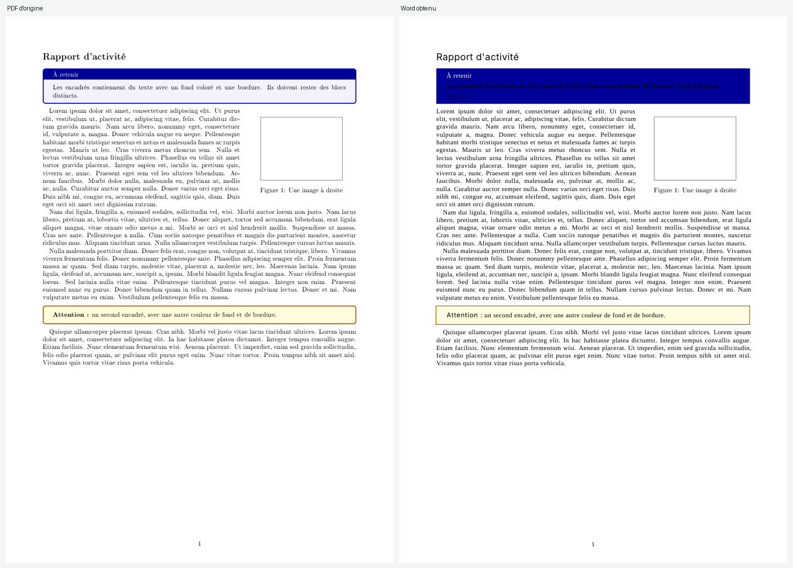
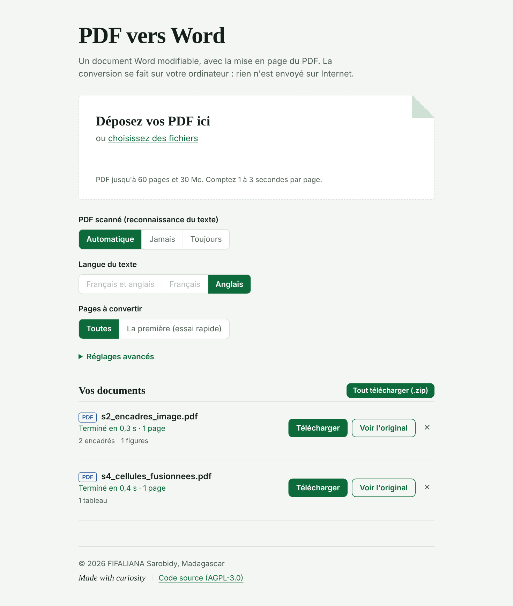

pdf2docx rend un document Word modifiable, avec les colonnes, les tableaux, les encadrés et les images à leur place. Les PDF scannés sont lus par OCR. Tout reste sur votre ordinateur.

Python 3.10 ou plus. Pour les PDF scannés, ajoutez Tesseract avec la langue française.
git clone https://github.com/YOUR-USER/pdf2docx.git
cd pdf2docx
python -m venv .venv
.venv\Scripts\activate # Linux / macOS : source .venv/bin/activate
pip install .
pdf2docx-guiUne page s'ouvre dans le navigateur : glissez vos PDF, téléchargez les fichiers Word.

Cette page est une vitrine : GitHub Pages ne peut pas exécuter Python. Le convertisseur tourne sur votre machine, et vos fichiers ne partent jamais sur Internet.
Chaque PDF du corpus de test est converti, relu par LibreOffice puis comparé à l'original (texte, position des mots, rendu visuel). Un score de 1 serait une copie parfaite.
| Document de test | Score |
|---|---|
| Cellules fusionnées | 0,985 |
| Tableaux sans bordures | 0,974 |
| Rapport avec en-tête et pied de page | 0,952 |
| Encadrés et image | 0,922 |
| Scan droit, propre | 0,910 |
| Formules | 0,890 |
| Texte sur trois colonnes | 0,881 |
| Scan incliné | 0,839 |
| Moyenne | 0,919 |
Mesures faites avec LibreOffice, pas avec Word : de petits écarts sont possibles. Les formules et les graphiques sont insérés en image.
Logiciel libre sous GNU AGPL v3 ou ultérieure, comme PyMuPDF sur lequel il s'appuie. Vous pouvez l'utiliser, le modifier et le partager, à condition de garder le même régime et de fournir le code source.